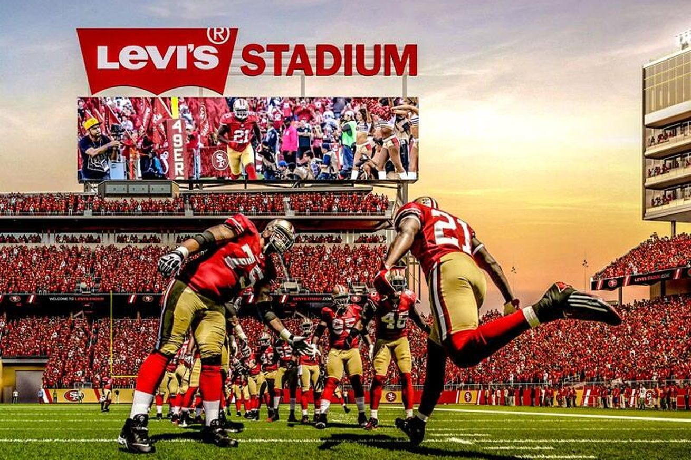

Latest Results and Videos
70 Years and Counting
About 49ers
The San Francisco 49ers are a professional American football team located in the San Francisco Bay Area. They compete in the National Football League (NFL) as a member club of the league's National Football Conference (NFC) West division. The 49ers currently play their home games at Levi's Stadium in Santa Clara, California. Levi's Stadium also serves as the site of the Pac-12 Football Championship Game for at least three years, beginning in 2014. Previously, the game was played at the home stadium of the division winner with the better record entering the game.